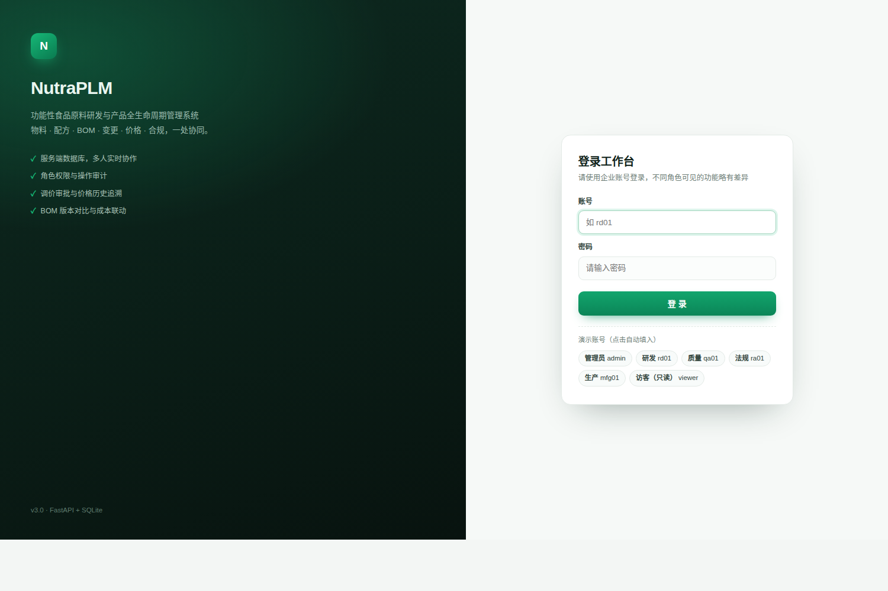
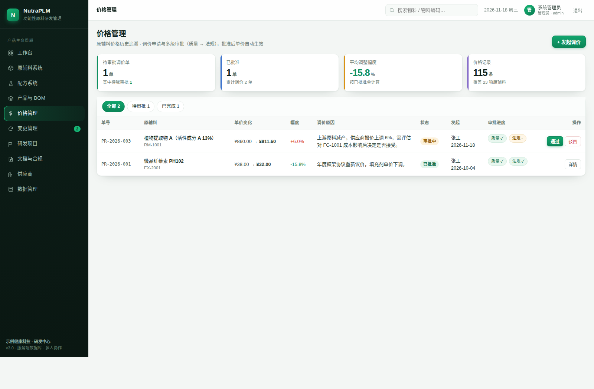
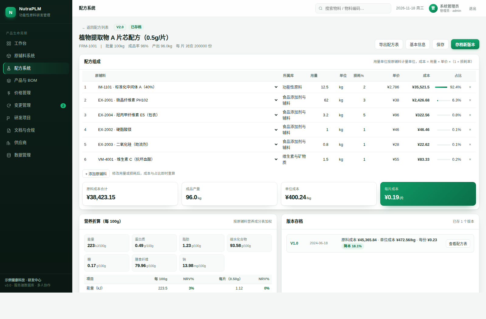
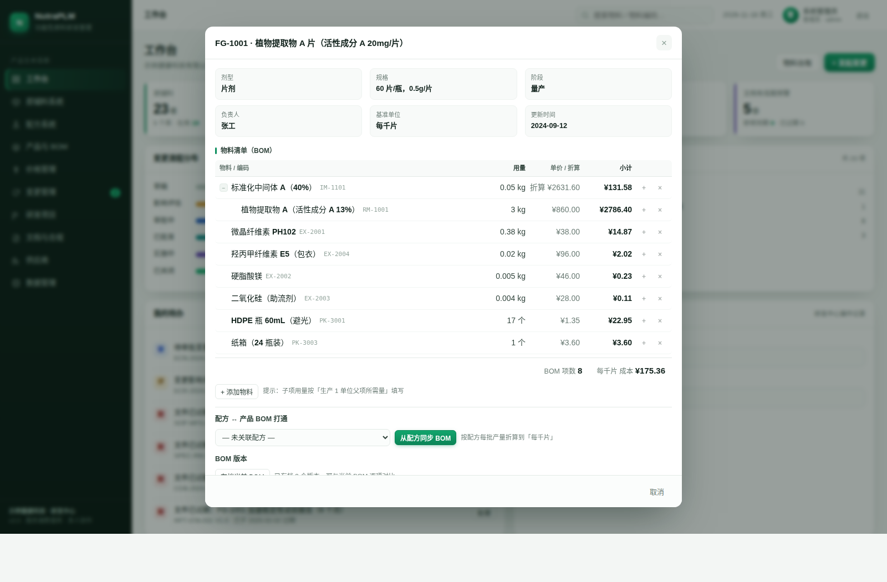

在原辅料与配方管理之上，补齐协作、价格、BOM 版本与法规营养计算四块拼图。
FastAPI + SQLite；登录会话、6 种角色、按集合的服务端写权限校验、全量操作审计、乐观并发提交。
价格历史曲线、调价申请（质量 → 法规两级审批），批准后单价自动生效并写入历史，可追溯影响配方成本。
产品 BOM 可从配方按产量系数一键同步；BOM 版本存档，任意版本与当前逐项对比用量与成本差异。
支持 .xlsx 直接导入（服务端 openpyxl 解析）；按 GB 28050 自动计算每 100g 与每份的 NRV%。
同一套 UI，从单机演示平滑升级为多人在线协作。




前端零构建、后端零外部依赖（仅 SQLite），克隆即可跑。
PLM/ ├─ server/ # FastAPI 服务 │ ├─ app.py # 接口 / 鉴权 / 审批流 │ ├─ seed.json # 演示数据种子 │ └─ requirements.txt ├─ web/ # 前端（静态） │ ├─ app.html │ ├─ style.css │ └─ enhance.js # 登录/价格/BOM/NR% ├─ demo/offline.html# 单机版（无后端） └─ run.sh
entities 原辅料 / 配方 / 产品 / 变更 / 项目 / 文档 / 供应商price_requests 调价单与审批节点price_history 价格变更流水bom_versions BOM 版本快照users / sessions / audit_log 账号、会话与审计需要 Python 3.10+，无需 Node、无需前端构建。
git clone https://github.com/kameng19944/PLM.git cd PLM bash run.sh # 安装依赖并启动 # 打开 http://127.0.0.1:8000
不同角色登录后可见功能不同，服务端同样按角色校验写入权限。
| 账号 | 密码 | 角色 | 可做什么 |
|---|---|---|---|
admin | admin123 | 系统管理员 | 全部权限、账号管理、审批任一节点 |
rd01 | rd123 | 研发工程师 | 原辅料 / 配方 / 产品 BOM / 项目，发起调价 |
qa01 | qa123 | 质量经理 | 质量节点审批、文档、物料维护 |
ra01 | ra123 | 法规专员 | 法规节点审批、合规文档 |
mfg01 | mfg123 | 生产主管 | 项目阶段推进 |
viewer | view123 | 访客（只读） | 只读浏览，写入会被服务端拒绝 |